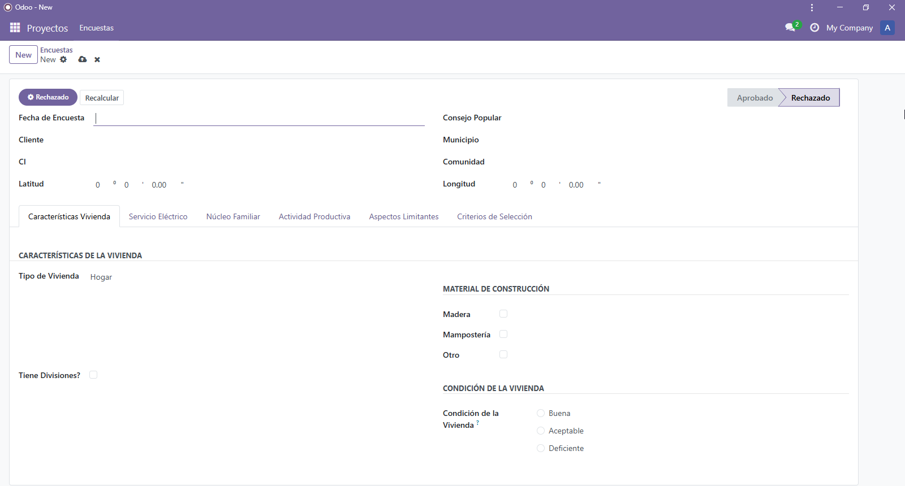
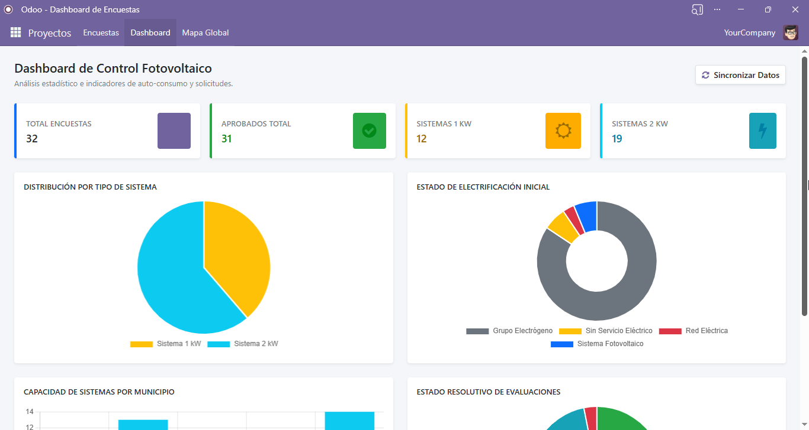

Plataforma avanzada para la evaluación técnica de clientes con viviendas aisladas, diseñada para optimizar proyectos fotovoltaicos mediante encuestas inteligentes, dashboards analíticos y geolocalización interactiva en Odoo 18.
Diseñado para empresas e instituciones que requieren una evaluación estructurada de clientes potenciales para instalaciones solares aisladas.
Formularios personalizados para recopilar información técnica, social y energética de clientes rurales.
Visualización avanzada mediante KPI Cards y gráficos interactivos desarrollados con Chart.js.
Geolocalización interactiva de encuestas utilizando Leaflet para visualizar clientes y ubicaciones estratégicas.
Navegación rápida desde el mapa mediante un panel lateral con clientes y acceso directo a las encuestas.
Evolución continua del módulo con nuevas herramientas analíticas y geoespaciales.
Se añadió un dashboard avanzado para visualizar:
Incorporación de un mapa global interactivo utilizando Leaflet para visualizar la geolocalización de las encuestas.
Integración de un panel lateral dentro del mapa global para navegar rápidamente entre clientes registrados.
Interfaz moderna y optimizada para operaciones empresariales.


Gestiona encuestas, visualiza estadísticas avanzadas, analiza clientes y utiliza mapas interactivos para mejorar la toma de decisiones energéticas.